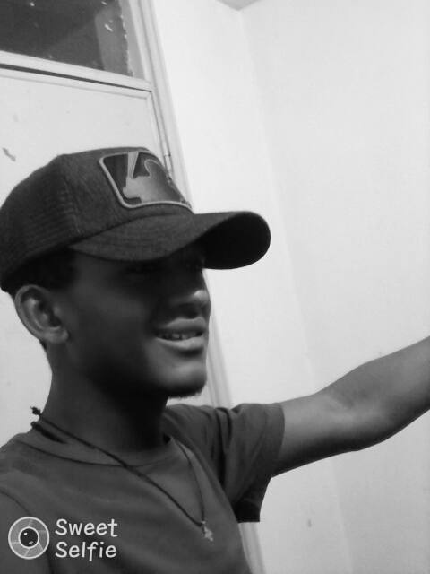

My name is Mulugeta Kifle Degefa was born in 1994,in the small town dekebora located near Oromiya region east shewa, mojo town around 18 km for east .my father, kifle degefa, was orthodox Oromo and my mother, jemanesh telila was a orthodox amhara Despite some sources claiming that his mother was an ethnic Amharic, that my father is Oromo and my mom is Amara asserted that no one is given and taken away my Oromummaa. my father was a typical Oromian farmer and was to speak Oromo and Amharic language while my mother also was a fluent speaker of both Amharic and Oromo.
I am youngest child for father and mother, the childhood name was abuka.so that our childhood is cowherd and support family in the works on the farming like farm land, harvest crops. that live in rural area have many advantages for me for example I know that traditional well-being and inter relation between environment and society and the weather condition of rural are have boride and happy full for life. Then I went to the local primary school at 6 years old I am studies at dekebora primary school and later continued his studies at secondary schools in Assela town. Then completed high school and preparatory school in assela live with brother so that I am bring entrance exam I can then join to Addis Ababa university . I was always very interested in his own education and later in his life also encouraged others to learn and to improve.
I am speaks perfectly Afaan Oromo and Amharic language and I have a fitness and professes that physical health goes hand in hand with mental health and, as such, he frequents physical and gym activities in assela. I believes that I "doing God's work" when promoting peace and reconciliation. My hobbies are listen music, play football, enjoy yourself within friend and every day I went to church and I am not like depression , conflict with other friends and family. I think I am stable person I can do anything.I am a orthodox born of Ethiopian Orthodox Tewahedo Church Christian father and mother. I was raised in a family of religious identity. I am frequently underscores the importance of faith and as a result, almost all faith communities are enjoying greater liberality in our tenure.